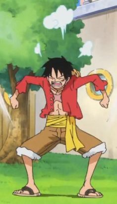
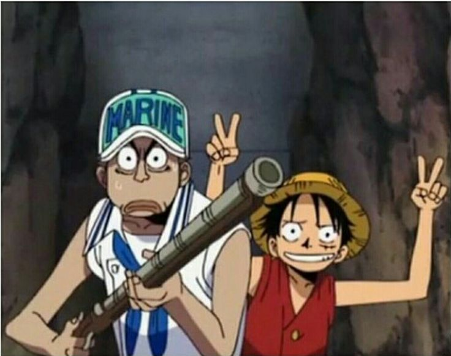
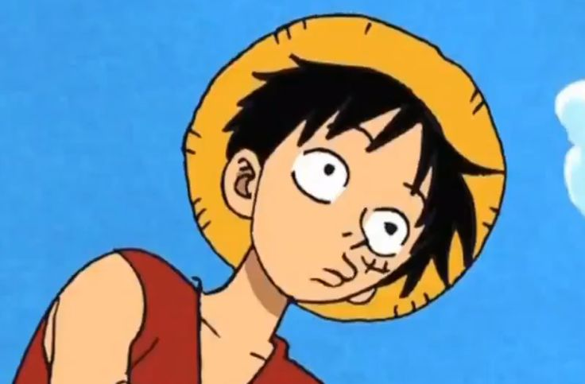

The Basque–Icelandic pidgin (Basque: Euskoislandiera, Islandiera-euskara pidgina; Icelandic: Basknesk-íslenskt blendingsmál) was a Basque-based pidgin spoken in Iceland during the 17th century. It consisted of Basque, Germanic, and Romance words.
Basque whale hunters who sailed to the Icelandic Westfjords used the pidgin as a means of rudimentary communication with locals.[1] It might have developed in Westfjords, where manuscripts were written in the language, but since it had influences from many other European languages, it is more likely that it was created elsewhere and brought to Iceland by Basque sailors.
Basque whalers in Iceland
Basque whalers were among the first to catch whales commercially; they spread to the far parts of the North Atlantic and even reached Brazil. They started coming to Iceland about 1600.[4] In 1615, after becoming shipwrecked and getting into a conflict with the locals, some Basque sailors were massacred in an event that would be known as the Slaying of the Spaniards.
Basques continued to sail to Iceland, but for the second half of the 17th century French and Spanish whalers are more often mentioned in Icelandic sources
History of the glossaries
Original text.
Chopper e un ren vorbitor
Acest este un ID cu numele "reni in zapada"
Acesta este un ID cunumele "reni in flori"
Acesta este un ID cunumele "reni in piscina"



Pentru mai multe informatii despre pidginul basco-islandez, apasa aici.